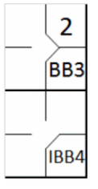

action { batter -> BB }
/* Base sur balle intentionelle */
action { batter -> IBB , runner1 -> + }

Le scoreur officiel doit inscrire une base sur balles intentionnelle lorsqu’un lanceur n’essaye pas de lancer son dernier lancer dans la zone de strike, mais volontairement lance la balle loin du receveur qui se tient en dehors de son rectangle [OBR 9.14(b)].
Le scoreur doit porter une attention particulière aux bases sur balles intentionnelles. L'intention doit être parfaitement claire et se justifie généralement par des situations de jeu particulières, comme la nécessité d'éviter un frappeur particulièrement efficace ou de remplir les bases afin de forcer tous les coureurs à avancer. L'abréviation « IBB » désigne une base sur balle intentionnel.
Une base sur balles intentionnelle compte comme un base sur balles normal et est inclus dans le compte cumulatif.
Exemple 22: Après trois bases sur balles normales, un base sur balles intentionnel est accordé. Quelle que soit l'intention, cela compte comme le quatrième base sur balles accordé par ce même lanceur.
| WBSC | Transcription dans l'outil de scorage | Outil |
|---|---|---|
|
 |
/* Le premier batteur arrive sur base sur un 'base on ball' */ action { batter -> BB } /* Base sur balle intentionelle */ action { batter -> IBB , runner1 -> + } |
|